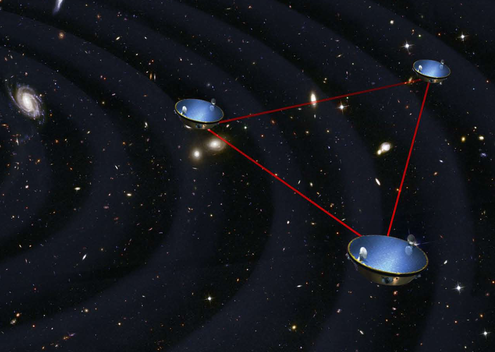
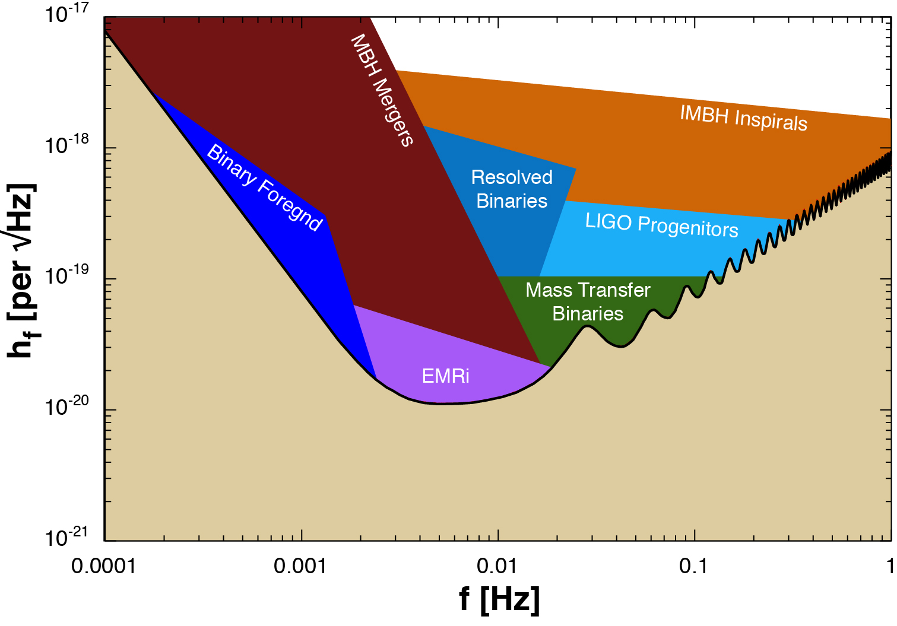
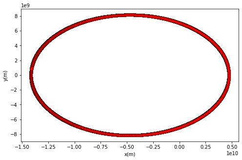
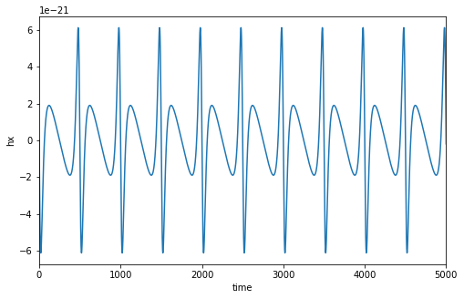
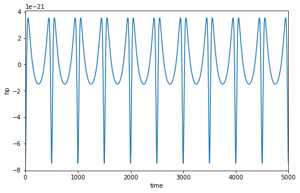

| WELCOME | WHY EMRIs? | METHODS | DISCUSSION AND CONCLUSION | REFERENCES AND THANKS |
When extremely energetic astrophysical events (such as colliding black holes, neutron stars merging, etc.) occur, the shifting gravitational fields around these objects may result in spacetime oscillating, causing gravitational waves to form. These waves propogate through space similarly to electromagnetic waves, and like electromagnetic waves, they encode important information about their source.

The Laser Interferometer Space Antenna (LISA, pictured above) is a planned gravitational wave observatory, consisting of three free-flying spacecraft in a triangular formation, separated by 2.5 million kilometer long arms (CITATION PENDING). LISA will be in orbit around the Earth, trailing behind it by 20 degrees. The impressive size of this detector means that it will be able to detect sources at longer wavelengths than is currently possible; while LIGO is sensitive in the range of 100-1000Hz, LISA will detect in the range of 10^-4 to 0.1Hz. The sensitivity curve below demonstrates how EMRIs, in purple, fall just within LISA's range of observation (CITATION PENDING).

All of this together demonstrates how influential the data collected by LISA will be for our wider understanding of black hole evolution, relativity, and many other extreme astrophysical phenomenon.
Extreme Mass Ratio Inspirals (EMRIs) are a promising gravitational wave source, which will only be
detectable by LISA. EMRIs consist of a small compact object, such as a stellar mass black hole or neutron star, falling into a
supermassive black hole. As its eccentric orbit decays, the object's waveform (a graph which records periods of stronger/weaker
gravitational influence as a sinusoidal curve) maps out the changing spacetime of it’s environment (3).
  
This gives us incredible insight into the region of interest. From this signal, we can extract
valuable information which will enhance our understanding of the supermassive black hole evolution, stellar dynamics in AGN and the
behavior of general relativity under extreme conditions. However, because EMRIs often occur in extremely dynamic regions,
how to most efficiently detect the waveform despite colored noise remains an open question.
Currently, searching for EMRIs in gravitational wave data is also extremely time consuming. While there are a variety of models
that are used to detect signals from other GW sources, to detect an EMRI signal, one would need 10^14 of these templates due
to the sheer number of parameters. Thus, searching for EMRI signals is often a blind search through different frequency
ranges, trying to determine in which one a signal is present. The topic of this research, Harmonic Correlation, is a detection
method which exploits harmonic structure in the power spectrum of our data, allowing us to determine if there is
a signal buried in the noise. All of this is reliant on the eccentricity present in EMRI orbits, which creates such a structure
in the first place. Furthermore, this method works even at low signal to noise ratios (SNRs), making it a promising tool for
analyzing future LISA data.